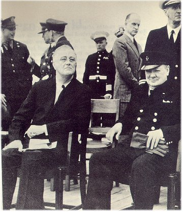

The Lion and the Eagle
 Cooperation between the United States and her British allies was intensive and very effective throughout World War II. Franklin Roosevelt and Winston Churchill had met in August 1941 and agreed upon what became known as the "Atlantic Charter." Although it was merely a policy statement, the two leaders understood that they had common interests in continuing what Woodrow Wilson had called a war to save democracy. With Japan in control of much of the Far East and Germany in control of most of Europe, the United States and Great Britain were indeed the only two great democracies left fighting against the Axis.
Faced with a two-front war, the United States and Great Britain quickly concluded that Germany was the greater threat to the survival of humanity, and thus the two nations adopted a "Germany first" policy. In general that strategy was followed, although the United States was forced to change its priorities when the Japanese occupied the island of Guadalcanal in 1942. From there they could harass all U.S. shipping being used to build up American forces in Australia, the base of operations for the war against Japan.
Thus in August 1942 U.S. Marines went ashore at Guadalcanal and fought a long, bloody six-month campaign to gain control of the island. General Douglas MacArthur was in command of army troops in Australia, and Admiral Chester Nimitz commanded navy, marine, and army units in the Central Pacific. Soon MacArthur and Nimitz began a two-pronged assault upon Japan that consisted of a series of amphibious operations along the coastline of Indonesia and through the island chains of the Pacific. Marines and soldiers paid a high price in their battles against the Japanese, who had been digging defensive positions in those islands for almost twenty years.